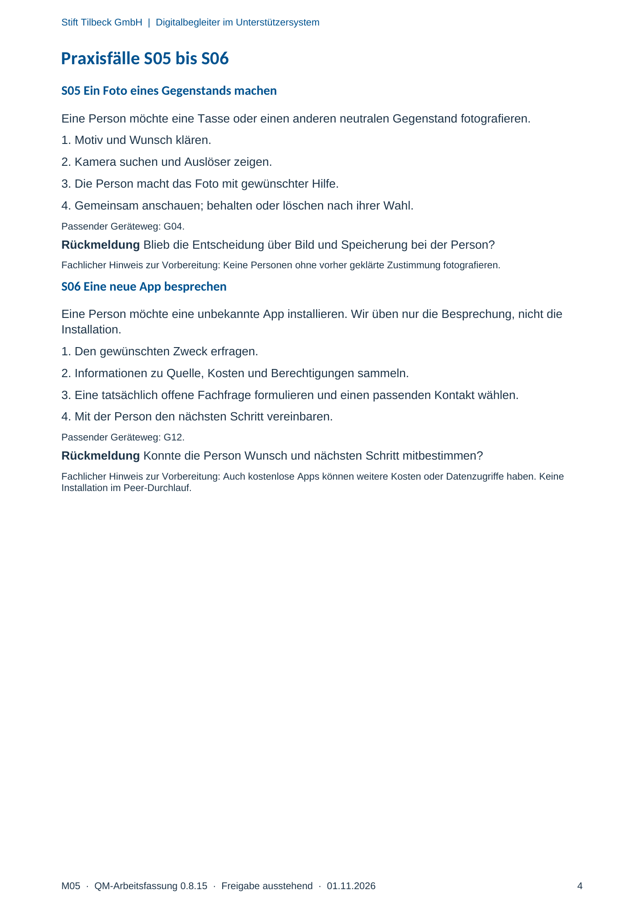

M05 · Originalseite 4
Ein Foto eines Gegenstands machen
Original-Druckseite mit S05. Auf derselben Seite stehen außerdem S06. Diese sind dadurch keine zusätzliche Aufgabe.
Fragen und Ankreuzfelder werden auf dem Ausdruck bearbeitet. Die Lesefassung speichert keine Antworten.
Lesefassung · Seite 4
Stift Tilbeck GmbH | Digitalbegleiter im Unterstützersystem
M05 · QM-Arbeitsfassung 0.8.15 · Freigabe ausstehend · 01.11.2026 4
Praxisfälle S05 bis S06
S05 Ein Foto eines Gegenstands machen
Eine Person möchte eine Tasse oder einen anderen neutralen Gegenstand fotografieren.
1. Motiv und Wunsch klären.
2. Kamera suchen und Auslöser zeigen.
3. Die Person macht das Foto mit gewünschter Hilfe.
4. Gemeinsam anschauen; behalten oder löschen nach ihrer Wahl.
Passender Geräteweg: G04.
Rückmeldung Blieb die Entscheidung über Bild und Speicherung bei der Person?
Fachlicher Hinweis zur Vorbereitung: Keine Personen ohne vorher geklärte Zustimmung fotografieren.
S06 Eine neue App besprechen
Eine Person möchte eine unbekannte App installieren. Wir üben nur die Besprechung, nicht die
Installation.
1. Den gewünschten Zweck erfragen.
2. Informationen zu Quelle, Kosten und Berechtigungen sammeln.
3. Eine tatsächlich offene Fachfrage formulieren und einen passenden Kontakt wählen.
4. Mit der Person den nächsten Schritt vereinbaren.
Passender Geräteweg: G12.
Rückmeldung Konnte die Person Wunsch und nächsten Schritt mitbestimmen?
Fachlicher Hinweis zur Vorbereitung: Auch kostenlose Apps können weitere Kosten oder Datenzugriffe haben. Keine
Installation im Peer-Durchlauf.
Originalseite ansehen
